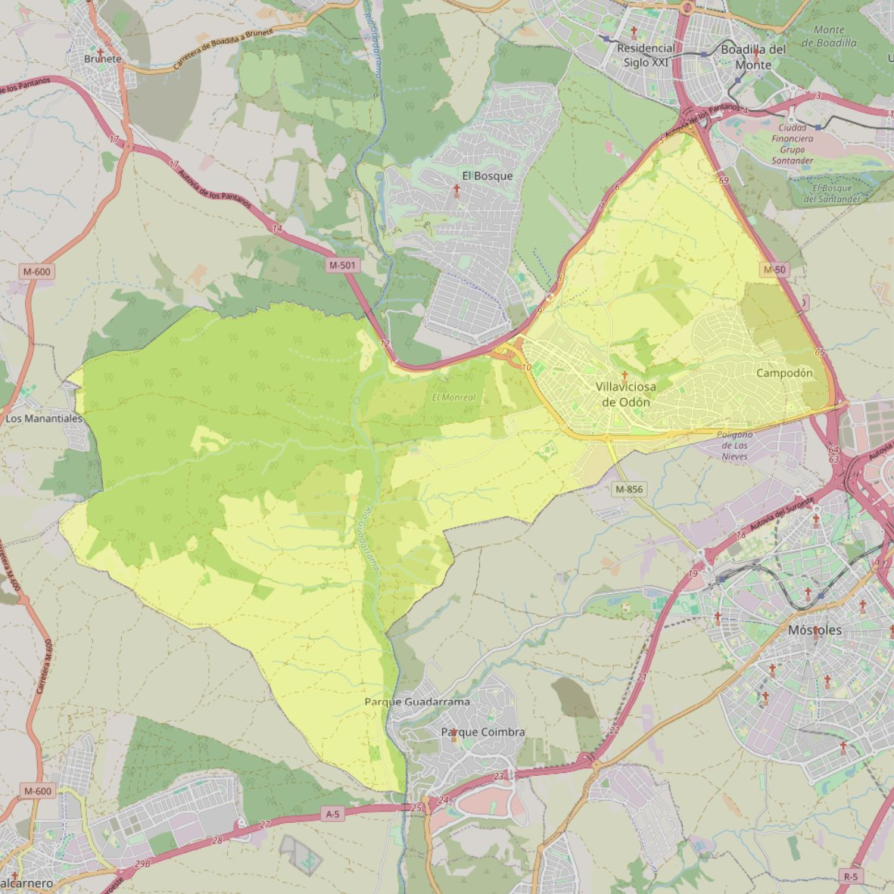

Santiago Apóstol

- Arciprestazgo
- Villaviciosa de Odón
- Población
- Villaviciosa de Odón
- Dirección postal
- Avda. Laura García Noblejas, 1
- Código postal
- 28670
- Extensión
- 51,33 km² (5.133 ha)
- Teléfono
- 916 160 160
- Correo electrónico
- info@parroquiasantiagoapostol.com